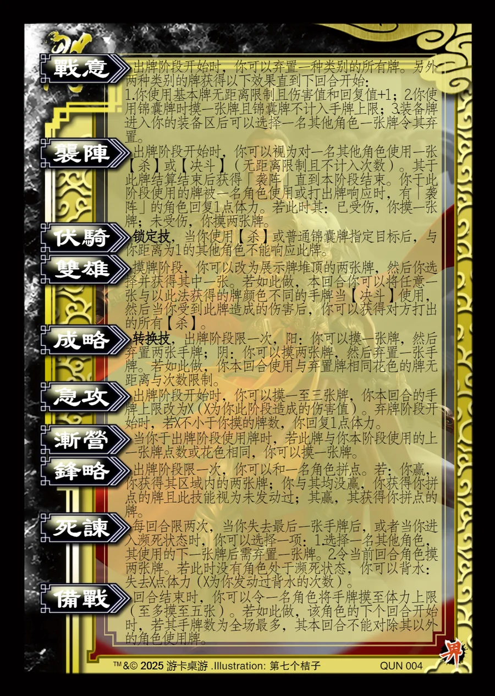

点击卡面查看大图
袁绍
— 技能卡率盟伐董
战意衍生
出牌阶段开始时，你可以弃置一种类别的所有牌。另外两种类别的牌获得以下效果直到下回合开始：
1.你使用基本牌无距离限制且伤害值和回复值+1；2.你使用锦囊牌时摸一张牌且锦囊牌不计入手牌上限；3.装备牌进入你的装备区后可以选择一名其他角色一张牌令其弃置。
袭阵衍生
出牌阶段开始时，你可以视为对一名其他角色使用一张【杀】或【决斗】（无距离限制且不计入次数）。其于此牌结算结束后获得「袭阵」直到本阶段结束。你于此阶段使用的牌被一名角色使用或打出牌响应时，有「袭阵」的角色回复1点体力。若此时其：已受伤，你摸一张牌；未受伤，你摸两张牌。
伏骑锁定技衍生
锁定技，当你使用【杀】或普通锦囊牌指定目标后，与你距离为1的其他角色不能响应此牌。
双雄衍生
摸牌阶段，你可以改为展示牌堆顶的两张牌，然后你选择并获得其中一张。若如此做，本回合你可以将任意一张与以此法获得的牌颜色不同的手牌当【决斗】使用，然后当你受到此牌造成的伤害后，你可以获得对方打出的所有【杀】。
成略转换技衍生
转换技，出牌阶段限一次，阳：你可以摸一张牌，然后弃置两张手牌；阴：你可以摸两张牌，然后弃置一张手牌。若如此做，你本回合使用与弃置牌相同花色的牌无距离与次数限制。
急攻衍生
出牌阶段开始时，你可以摸一至三张牌，你本回合的手牌上限改为X（X为你此阶段造成的伤害值）。弃牌阶段开始时，若X不小于你摸的牌数，你回复1点体力。
渐营衍生
当你于出牌阶段使用牌时，若此牌与你本阶段使用的上一张牌点数或花色相同，你可以摸一张牌。
锋略衍生
出牌阶段限一次，你可以和一名角色拼点。若：你赢，你获得其区域内的两张牌；你与其均没赢，你获得你拼点的牌且此技能视为未发动过；其赢，其获得你拼点的牌。
死谏衍生
每回合限两次，当你失去最后一张手牌后，或者当你进入濒死状态时，你可以选择一项：1.选择一名其他角色，其使用的下一张牌后需弃置一张牌。2.令当前回合角色摸两张牌。若此时没有角色处于濒死状态，你可以背水：失去X点体力（X为你发动过背水的次数）。
备战衍生
回合结束时，你可以令一名角色将手牌摸至体力上限（至多摸至五张）。若如此做，该角色的下个回合开始时，若其手牌数为全场最多，其本回合不能对除其以外的角色使用牌。